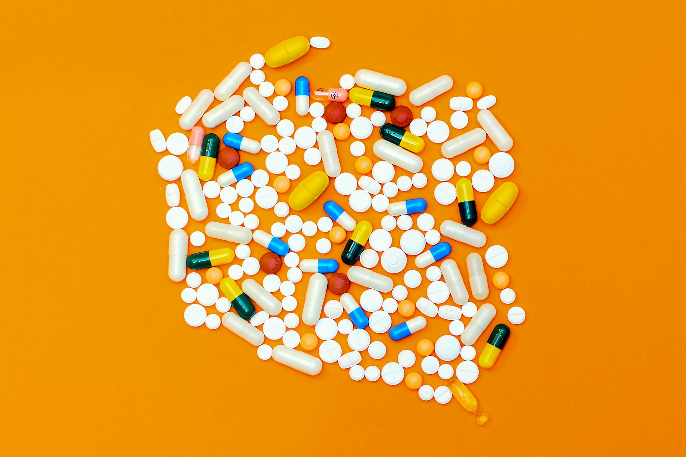

Nourish and Bloom
At Nourish & Bloom Pharmacy, we go beyond the conventional pharmacy experience. Our curated selection of high-quality health and wellness products caters to every aspect of your well-being, from premium prescription medications to natural beauty essentials. Step into a world of enriched pharmacy services, empowering you to thrive both physically and spiritually.
Our expert team of pharmacists and healthcare consultants are dedicated to personalizing your wellness journey. By offering specialized consultancy services, we streamline pharmacy operations, optimize medication management, and enhance patient safety.
But our commitment doesn't end there. Embrace tranquility through our rejuvenating wellness services, ranging from mindfulness practices to specialized nutrition plans. Unveil your inner radiance with our handpicked natural beauty products, ensuring you glow from the inside out. Join us in our mission to nourish your body, mind, and soul.